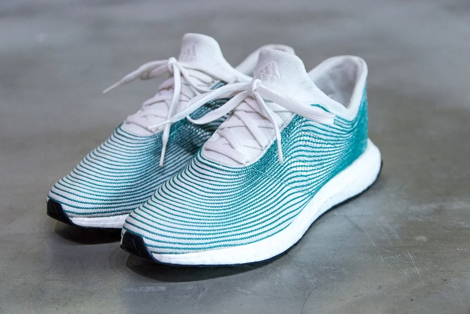

Produtos
A imagem ao lado é de um chinelo, mas disso você já sabe, não é? Porém, eu garanto que você não imaginou que esse chinelo é feito de nada mais, nada menos do que plástico reciclado. Sim, exatamente isso, plástico de rios e das ruas, que são coletados e transformados nesse lindo chinelo. Nós, da Safe Flip, fazemos esses chinelos em parceria com a CleanUp e ONGs para moradores de rua, distribuindo-os gratuitamente para que essas pessoas não tenham que andar descalças pelas ruas. O que alem de ajudar quem precisa ainda diminuimos a quantidade de platico pelo Brasil e quem sabe um dia no mundo
O tênis ao lado foi desenvolvido em parceria com a Adidas e mais uma vez em colaboração com algumas ONGs. Este tênis é confeccionado com fibras de plástico, finas e maleáveis, o que o torna macio e leve. Seu custo é significativamente inferior ao de um tênis convencional, uma vez que é composto principalmente por plástico reciclado. Apesar de ser feito com material reciclável, ele passa em todos os testes de conforto, durabilidade e até mesmo em atividades esportivas leves, como caminhadas, academia e corridas de média distância.
Sobre nós
A Safe Flip começou a pouco tempo como apenas um ideia de reutilizar plastico, porem com o passar dos tempos e vendo o mundo como ta hoje em dia, decidimos arrumar um reito de ajudar quem precisa e assim criamos essas parcerias e buscamos criar muitas outras. Hoje ja distribuimos mais de 20 mil chinelos de forma gratuita para moradores de rua
Você sabia?
A poluição causada pelo plástico é de fato um problema global alarmante. A produção anual de mais de 430 milhões de toneladas de plástico pela humanidade representa uma ameaça significativa ao meio ambiente e à saúde do planeta. Projetos como o seu desempenham um papel crucial na mitigação desse problema, oferecendo uma alternativa valiosa para o destino do plástico. Ao criar produtos duráveis a partir de plástico reciclado, você contribui para reduzir o consumo excessivo e o desperdício que resulta do consumismo desenfreado. Isso não apenas ajuda a preservar os recursos naturais, mas também reduz os impactos negativos no meio ambiente, incluindo a poluição de rios e oceanos. Promover a conscientização sobre a importância de produtos duráveis e práticas de consumo responsável é fundamental para aumentar nossa longevidade como sociedade e para garantir um futuro mais sustentável para as gerações futuras. Seu projeto desempenha um papel importante nesse esforço, e é encorajador ver iniciativas como a sua trabalhando para enfrentar os desafios ambientais globais.
Como é feito

Tudo começa nos rios e praias, onde a equipe da ONG Salve Água realiza a limpeza dessas áreas, recolhendo a maior parte do lixo reciclável visível. Todo o lixo é transportado para a sede da ONG, onde passa por um processo de seleção e limpeza. A fração de plástico é então enviada para a nossa empresa, que é responsável por triturar, aquecer e fundir todos os pedaços de plástico em um só, facilitando assim o processo de transformá-los em tiras (quase como fios) de plástico. Em seguida, essas tiras são encaminhadas para as nossas parceiras, onde são confeccionados os produtos mencionados anteriormente
Como você pode nos ajudar
Embora o custo não seja tão elevado quanto o de produtos convencionais e o material utilizado esteja amplamente disponível no mundo de hoje, ainda enfrentamos despesas significativas no processo de seleção, limpeza e fabricação das tiras, além dos salários dos nossos funcionários. Atualmente, contamos com o apoio de patrocinadores que demonstraram interesse em nossa causa e investem em nosso projeto para que possamos continuar. Se você também estiver interessado em apoiar nosso projeto, encontrará nossos contatos no rodapé da página. Se preferir não investir diretamente, mas desejar contribuir com uma pequena quantia, você pode fazer um envio de dinheiro através do nosso PIX, cujas informações também estão disponíveis logo abaixo. Toda ajuda é bem-vinda e faz a diferença em nossa missão de promover a sustentabilidade e a inclusão social. Agradecemos muito pelo seu interesse e apoio!